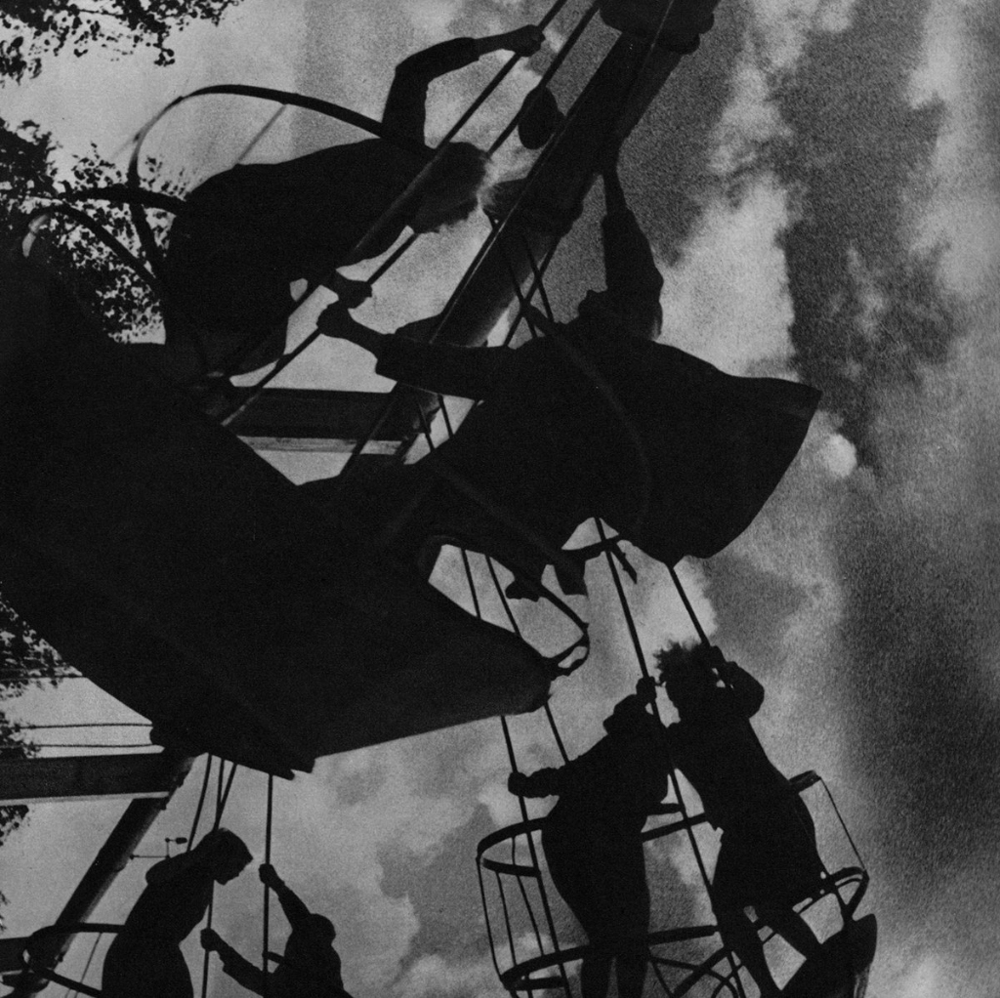
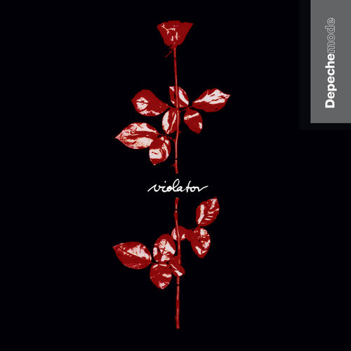
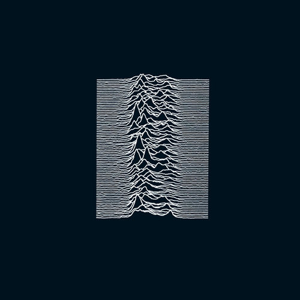
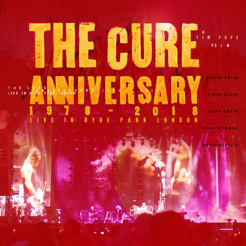
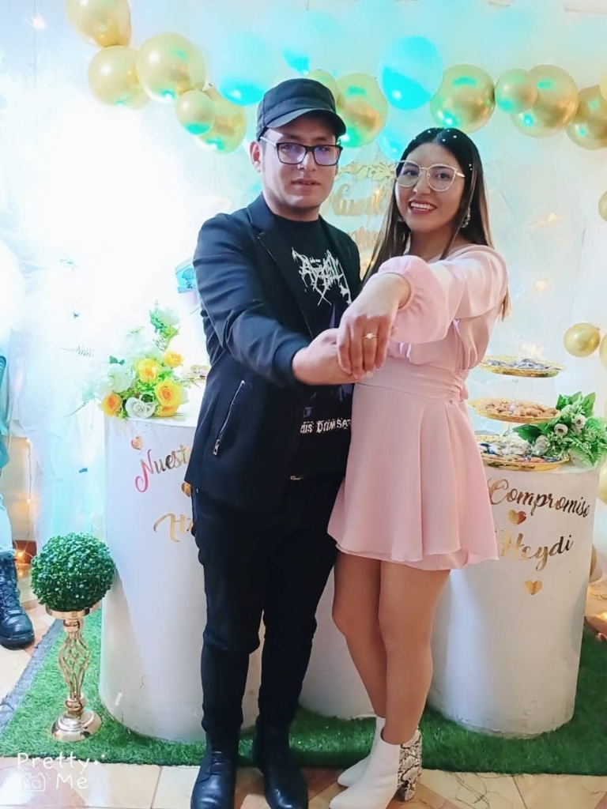
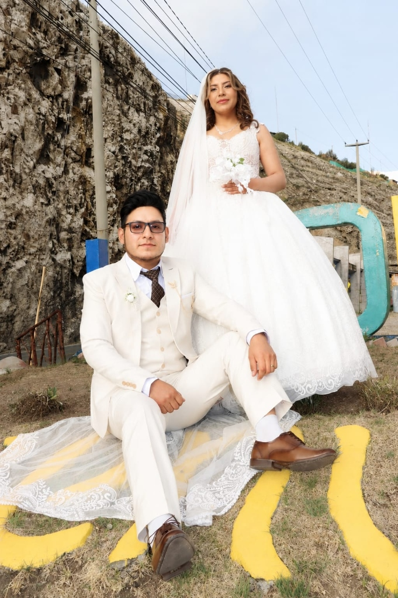
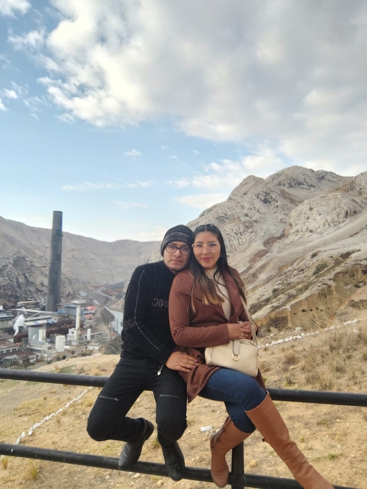

THREE CHEERS FOR OUR SWEET LOVE
Para mi esposo y compañero de vida: Italo • Bodas de Papel 📜
Parece que fue ayer cuando dijimos "Sí, acepto" aquel 22 de noviembre de 2025. Hoy celebramos con orgullo nuestras Bodas de Papel al cumplir nuestros primeros 365 días juntos.
Dicen que las Bodas de Papel simbolizan una historia que recién comienza a escribirse, pero en este primer año nosotros ya hemos compuesto una obra de arte: llena de risas, miradas cómplices, conciertos compartidos y un amor a prueba de todo, caminando juntos con casacas de cuero y el volumen al máximo.
Tú y yo sabemos que nuestro amor no es común: tiene la mística única de nuestro querido Manchester de La Oroya, esas tardes y noches vibrando juntos con el synth pop, las guitarras afiladas del new wave, la nostalgia envolvente del post-punk, la profundidad del dark wave y la frescura rebelde del indie. Esas canciones son la banda sonora de nuestra complicidad. En un mundo lleno de ruido banal, tú eres mi mejor melodía, mi refugio y mi eterno cómplice.
"Poverty is nothing for you
It is nothing for me
When I'm by your side...
Silver and gold worth nothing for us
The only treasure is here, it's us, in our love."
"La pobreza no es nada para ti
No es nada para mí
Cuando estoy a tu lado...
La plata y el oro no valen nada para nosotros
El único tesoro está aquí, somos nosotros, en nuestro amor."
DISCOS QUE VIBRAN CON NUESTRO AMOR EN LA OROYA
Synth Pop • New Wave • Post-Punk • Dark Wave • Indie Rock





El Compromiso • Donde dijimos sí 💍

22.11.2025 • Nuestro Gran Día 💒

La Oroya • En nuestro rincón 🏔️
Amor con actitud Punk ⚡🕶️
Por siempre a tu lado,
1er Aniversario • Bodas de Papel 📜